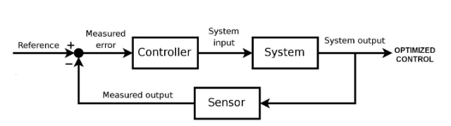
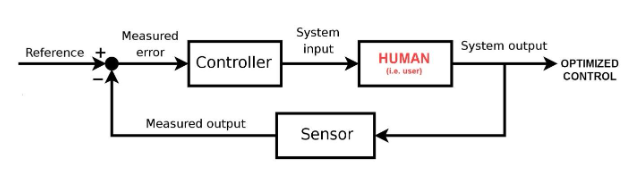
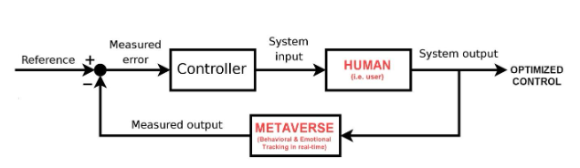
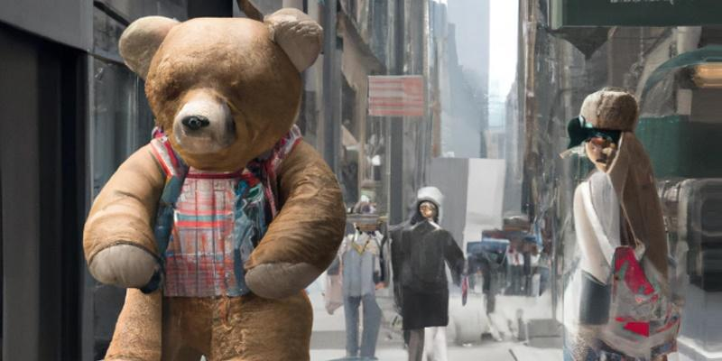

如果我们在过去几十年中学到了任何有关技术的知识，那就是我们没有为不利因素做好准备，直到问题如此严重以至于我们无法忽视它们。典型的代表是社交媒体，它刚出现时被誉为乌托邦，但现在被广泛认为是一种破坏性和破坏社会稳定的力量。这需要十多年的时间才能深入人心，但如今，绝大多数美国人认为社交媒体对我们的世界产生了主要的负面影响。
引用的原因包括错误信息的传播、仇恨、骚扰、两极分化和党派之争。当然，技术本身并没有造成这些问题。正是社交媒体背后的商业模式推动了平台在社会中调解信息流，以扭曲我们思维的方式过滤和放大内容。这是一种精神控制形式，而且会变得更糟。我说的是元宇宙。
虚拟世界和反馈控制
除非受到监管，否则元宇宙可能成为有史以来最危险的说服工具。我不会轻易发出这个警告。30 多年来，我一直是该领域的技术专家，从斯坦福大学、美国宇航局和美国空军的研究员开始，然后在该领域创立了许多早期公司。我真的相信元宇宙可以成为人类的积极力量，但如果我们等待问题变得像社交媒体一样令人震惊，那么要消除损害就为时已晚。
为了提高人们对这些问题的认识，我写了很多关于虚拟世界的危险和保护人权的必要性的文章，但我没有从技术角度解释为什么沉浸式技术比传统社交媒体危险得多。为此，我想介绍一个称为反馈控制的基本工程概念。
它来自称为控制理论的技术学科，这是工程师用来控制系统行为的方法。想想你家里的恒温器。你设定了一个温度目标，如果你的房子低于这个目标，暖气就会打开。如果你的房子太热，它就会关闭。正常工作时，恒温器可使您的房屋接近您设定的目标。这就是反馈控制。
当然，工程师喜欢让事情变得比他们需要的更复杂，所以上面的简单概念通常用一种称为控制系统图的标准格式表示，如下所示：

在供暖示例中，您的房子是系统，温度计是传感器，恒温器是控制器。称为参考的输入信号是您设置为目标的温度。该目标与您家中的实际温度（即测量输出）进行比较。目标温度和测量温度之间的差异被输入恒温器，它决定了加热器应该做什么。如果房子太冷，它的加热器就会打开。如果太热，它的加热器就会关闭。这是一个经典的控制系统。
当然，控制系统可以变得非常复杂，使飞机可以自动驾驶，汽车可以自动驾驶——甚至可以让机器人漫游者降落在火星上。这些系统需要复杂的传感器来检测驾驶条件或飞行条件或其他适合任务的条件。这些系统还需要强大的控制器来处理传感器数据并以微妙的方式影响系统行为。如今，控制器越来越多地以人工智能算法为核心。
有了这个背景，让我们回到元宇宙。
回到上面的标准图，我们看到只需要几个元素就可以有效地控制一个系统，无论是简单的恒温器还是复杂的机器人。两个最重要的元素是检测系统实时行为的传感器，以及可以影响这些行为的控制器。唯一需要的其他元素是不断检测行为并传递影响、引导系统实现预期目标 的反馈循环。
循环中的人
正如您可能已经猜到的那样，在考虑元宇宙的危险时，被控制的系统就是您——循环中的人。毕竟，当您戴上耳机并沉浸在虚拟世界中时，您将自己沉浸在一个有可能对您采取行动的环境中，而不是您对其采取的行动。换句话说，你成为了一个由第三方运行的人造世界的居民，可以实时监控和影响你的行为。这是一个非常危险的情况。

在上图中，人类用户的系统输入是沉浸式的视觉、声音和触觉，它们会被输入到您的眼睛、耳朵、手和身体中。这是压倒性的输入——可能是我们可以想象的最广泛和最亲密的输入，而不是使用外科大脑植入物。这意味着影响系统（即你）的能力同样广泛和亲密。上图中用户的另一侧是系统输出——即你的动作和反应。
这将我们带到上图中的*传感器框。*在虚拟世界中，传感器将实时跟踪您所做的一切——您的头部、手部和身体的物理运动。这包括你正在看的方向，你的凝视停留多长时间，你眼睛的微弱运动，你的瞳孔放大，你的姿势和步态的变化——甚至你的生命体征都可能在元宇宙中被追踪，包括您的心率、呼吸频率和血压。
此外，metaverse 将监控您的面部表情和声音变化，以实时跟踪您的情绪。这超出了感知其他人注意到的表情。它还包括人类无法识别的潜意识表达。这些事件被称为“微表情”，可以揭示用户不打算表达的情绪。用户甚至可能没有意识到感受到这些情绪，这使得元宇宙平台比你更了解你的内心感受。
这意味着当您沉浸在虚拟世界中时，传感器将跟踪您所做的几乎所有事情，并准确了解您在做这件事时的感受。我们可以通过用元节（实时行为和情绪跟踪）替换传感器框来在图中表示这一点，如下所示：

当然，在不受监管的元宇宙中，行为和情绪数据不仅会被跟踪，还会随着时间的推移而存储，从而创建一个数据库，反映个人在日常生活中可能如何对各种刺激作出反应。当通过人工智能算法处理时，这些广泛的数据可以转化为行为和情感模型，使平台能够准确预测用户在收到来自控制器的目标刺激（即*系统输入）时的反应。*而且因为元宇宙不仅是虚拟现实，而且是增强现实，用户的跟踪和分析不仅会发生在完全模拟的世界中，还会发生在虚拟内容修饰的现实世界中。换句话说，元宇宙平台将能够跟踪和分析我们日常生活中的行为和情绪，从我们醒来的那一刻到我们睡觉的那一刻。
当然，危险不在于平台可以跟踪和分析我们；这是他们可以用这些数据做的事情。这将我们带到上图中的控制器盒。控制器接收测量误差，这是参考目标（期望行为）和测量输出（感知行为）之间的差异。如果允许元界平台采用与社交媒体类似的商业模式，则参考目标将是旨在对用户施加影响的第三方议程（见下图）。第三方可能是希望说服用户购买产品或服务或相信某种宣传、意识形态或错误信息的付费赞助商。

当然，广告和宣传一直存在，并且使用传统的营销技术可以非常有效。Metaverse 的独特之处在于能够创建高速反馈循环，其中用户行为和情绪不断地反馈到控制器中，该控制器可以实时调整其影响以优化说服力。这个过程很容易越过从营销到操纵的界限。为了了解风险，让我们深入研究控制器。
控制器的核心旨在“减少系统所需行为与系统测量行为之间的误差”。它通过传递系统输入来做到这一点，在上图中显示为一个看似无辜的箭头。在元节中，这个箭头代表平台修改用户沉浸其中的虚拟或增强环境的能力。
换句话说，在一个不受监管的虚拟世界中，控制器可以改变用户周围的世界，修改他们的所见所闻和感觉，以推动该用户朝着期望的目标前进。而且由于控制器可以实时监控用户的反应，它将能够不断调整策略，优化说服力，每时每刻，就像恒温器优化房子的温度一样。
身陷险境
为了说明这一点，这里有一些例子：
想象一个用户坐在元节（虚拟或增强）的咖啡馆里。第三方赞助商希望激励该用户购买特定产品或服务，或者相信某个消息、宣传或错误信息。在元宇宙中，广告不会出现在我们今天熟悉的弹出式广告和视频中，而是出现在与我们周围环境无缝集成的沉浸式体验中。在这个特定示例中，控制器创建了一对坐在下一张桌子旁的虚拟情侣。该虚拟情侣将是用于影响用户 的系统输入。
首先，控制器将设计虚拟情侣以获得最大的影响。这意味着人工智能算法将根据目标用户的历史资料选择这对夫妇的年龄、性别、种族、服装风格、说话风格、举止和其他品质，以最佳地说服目标用户。接下来，这对夫妇将在目标用户的听力范围内进行人工智能控制的对话。该对话可能是关于目标用户正在考虑购买的汽车，并且可能被框定为虚拟夫妇讨论他们对自己最近购买的满意程度。
随着对话的开始，控制器实时监控用户，评估微表情、肢体语言、眼球运动、瞳孔扩张和血压，以检测用户何时开始关注。这可以像检测与虚拟夫妇发表的评论相关的用户的细微生理变化一样简单。一旦目标用户参与进来，控制器将修改对话元素以增加参与度。例如，如果用户的注意力随着这对夫妇谈论汽车的马力而增加，那么对话将实时调整以关注性能。
随着偷听对话的继续，用户可能没有意识到他或她已经成为一个沉默的参与者，通过潜意识的微表情、身体姿势和生命体征的变化做出反应。AI 控制器将突出显示目标用户反应最积极的产品元素，并在用户反应消极时提供对话反驳。而且由于用户不会公开表达反对意见，因此反驳可能会产生深远的影响。毕竟，虚拟情侣可以在这些问题完全浮现在目标用户的脑海中之前口头解决新出现的问题。这不是营销，这是操纵。
在不受监管的虚拟世界中，目标用户可能会认为虚拟情侣是由其他顾客控制的化身。换句话说，目标用户很容易相信他们正在无意中听到用户之间的真实对话，而没有意识到这是一种专门针对他们的促销改变体验，注入他们的周围环境以实现特定议程。
而且，不仅成年人会以这种方式成为目标，而且儿童已经很难将真实内容与宣传材料区分开来。Roblox 已经是 5000 万儿童使用的虚拟世界的提供商，它宣布了在不久的将来推出“沉浸式广告”的计划。如果在玩特定品牌的玩具或吃特定品牌的麦片时，一个巨大的可爱泰迪熊跟随他们，孩子有什么机会？
图片由 Louis Rosenberg 使用 Midjourney 拍摄
这是一个相对良性的例子。第三方的议程可能是影响目标用户的政治意识形态、极端主义宣传或彻底的错误信息或虚假信息，而不是推动新车或玩具的功能。此外，上述示例将用户定位为在他或她的虚拟世界环境中的促销体验的被动观察者。在更激进的示例中，控制器将主动让用户参与有针对性的促销体验。
例如，考虑这样一种情况，其中一个看起来和听起来像环境中任何其他用户的 AI 控制的化身让目标用户参与议程驱动的促销对话。在不受监管的元节中，用户可能完全不知道他或她已被有针对性的广告接近，而是可能相信他或她正在与另一个用户进行对话。谈话一开始可以很随意，但可以针对规定的议程。
此外，控制者可能会访问有关目标用户的大量数据，包括他们的兴趣、价值观、爱好、教育、政治派别等——并将使用这些数据来制作优化参与度的对话。此外，控制器将可以访问有关用户的实时信息，包括面部表情、声音变化、身体姿势、眼球运动、瞳孔扩张、面部血液模式，以及潜在的血压、心率和呼吸频率。控制器将根据目标用户的公开口头反应，结合微妙和潜在的潜意识微表情和生命体征，实时调整其对话策略。
众所周知，人工智能系统可以在国际象棋、围棋、扑克和大量其他策略游戏中击败最优秀的人类竞争对手。从这个角度来看，普通消费者在与能够访问用户个人背景和兴趣的人工智能代理进行促销对话时有什么机会，并且可以根据血压瞳孔扩张的细微变化实时调整其对话策略? 在虚拟世界中通过这种类型的反馈控制侵犯用户认知自由的可能性是如此之大，它可能与彻底的精神控制接壤。
为了完成基于 Metaverse 的反馈控制图，我们可以用基于 AI 的软件替换通用文字控制器，该软件可以改变环境或注入会话化身，从而对目标用户产生优化的影响。这使用下面的短语AI 代理来表达。
如上文所述，公众应该意识到，大型虚拟世界平台可用于创建反馈控制系统，实时监控他们的行为和情绪，并使用人工智能代理来修改他们的沉浸式体验，以最大限度地说服。这意味着大型而强大的平台可以跟踪数十亿人，并通过以有针对性和适应性的方式改变他们周围的世界来对他们中的任何一个人施加影响。
这种情况令人恐惧，但并不牵强。
事实上，这可能是任何主流技术所实现的最接近“扮演上帝”的事情。为了防止出现这种情况，行业领导者、政治家和政策制定者需要采取行动，实施监管保障措施，促进行业标准，并在平台采用对公众有害的商业模式之前保证消费者的沉浸式权利。如果在社交媒体发展的早期就实施了这样的保障措施，世界可能会变得更安全。
Louis Rosenberg 博士是虚拟和增强现实的先驱。他的工作始于 30 多年前在斯坦福大学和美国宇航局的实验室。1992 年，他在空军研究实验室开发了第一个交互式增强现实系统。1993 年，他创立了早期的 VR 公司 Immersion Corporation（在纳斯达克上市）。2004 年，他创立了早期的 AR 公司 Outland Research。他在斯坦福大学获得博士学位，在 VR、AR 和 AI 技术方面获得了 300 多项专利，并且是加州州立大学的终身教授。